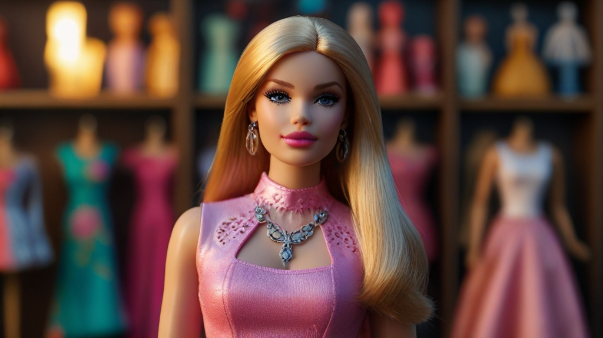
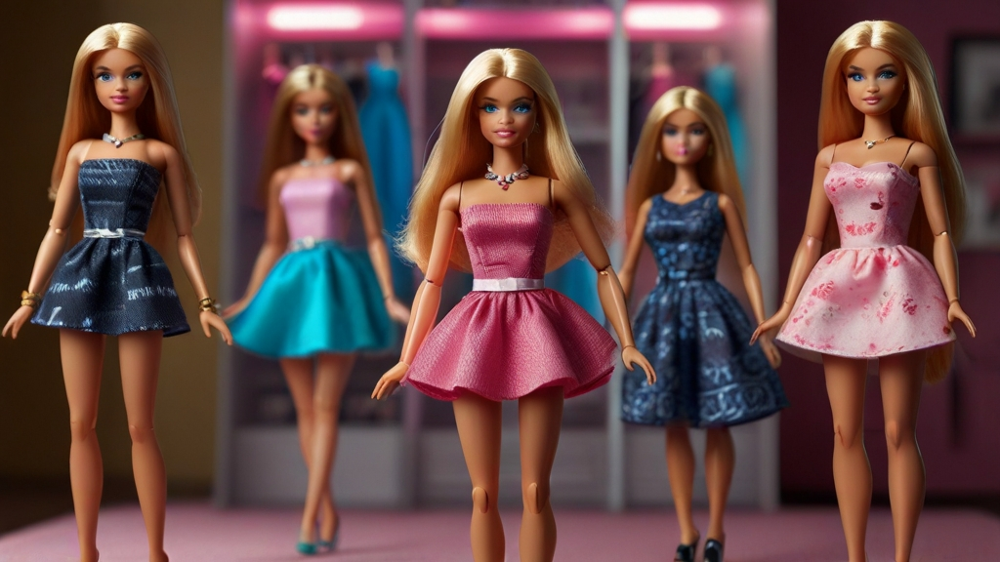

Barbie: A Timeless Cultural Icon

Barbie, created in 1959 by Ruth Handler, revolutionized the doll industry by offering a glamorous, grown-up alternative to traditional baby dolls. Despite early criticism for promoting unrealistic beauty standards, Barbie's popularity soared, making her a household name worldwide.
Over the years, Barbie evolved to reflect changing times. In the 1960s, she embraced mod fashion, while the 1970s saw her exploring diverse careers. The 1980s marked Barbie's glamorous lifestyle, and the 1990s brought diversity with ethnically diverse dolls and body types.
In the 21st century, Barbie continued to adapt, embracing technology and promoting empowerment and inclusivity. The Fashionista line introduced diverse dolls, reflecting a more inclusive definition of beauty.
Despite controversies over body image and gender stereotypes, Barbie remains a beloved cultural icon, inspiring creativity and imagination across generations. Whether she's a fashionista, astronaut, or president, Barbie symbolizes endless possibilities and resilience in the face of change.
Barbie: A Symbol of Possibility and Creativity

Since her inception in 1959, Barbie has transcended the status of a mere doll to become an emblem of imagination and aspiration. Crafted by Ruth Handler, Barbie represented a departure from conventional toys, offering children a canvas on which to paint their dreams.
Barbie's evolution has mirrored societal shifts, adapting to changing norms and values. From her early days as a fashion-forward trendsetter to her foray into diverse career paths, Barbie has encouraged children to explore endless possibilities and imagine themselves in varied roles.
In the modern era, Barbie has embraced inclusivity, with dolls reflecting a spectrum of ethnicities, body types, and abilities. This commitment to diversity sends a powerful message of acceptance and empowerment to children of all backgrounds.
Beyond playtime, Barbie's influence extends into popular culture, inspiring everything from fashion lines to movies. Despite occasional critiques, Barbie's enduring appeal lies in her ability to ignite creativity and foster a sense of limitless potential in those who engage with her.
As Barbie continues to evolve and inspire future generations, she remains a beacon of possibility—a reminder that with imagination and determination, any dream is within reach.